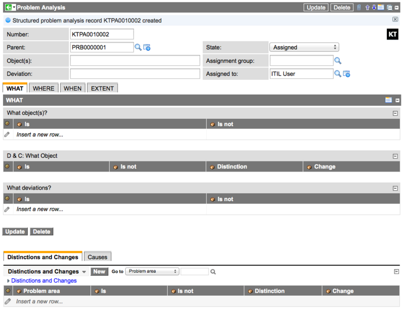
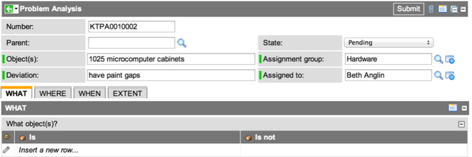

Creating a Problem Analysis Record
Contents
1 Overview
Structured problem analysis is a process for investigating the cause of a problem. The initial steps in this process are:
- Appraise the situation to understand the problem.
- Create a problem analysis record to track progress during the course of the process.
- [Optional] Request coaching assessment, if required.
2 Creating Situation Appraisals
Situation appraisals clarify the situation, allowing problem managers and ITIL users to outline concerns, choose a direction, and select priorities if there are multiple problems.
Situation appraisals can be added to incidents or problems.
- Within incident management, situation appraisal can enable faster restoration of service and a more satisfying outcome for users and customers.
- Within problem management, problem managers can use the information in a problem record to generate a corresponding problem analysis record, with data populated from the problem record.
To enter a situation appraisal:
- Navigate to the relevant problem or incident record.
- Locate the Situation Appraisal section.
- Fill in the fields (see table).
- Click Update.
{kind=link}
| Field | Description |
|---|---|
| Situation appraisal | A brief statement of the situation. |
| Current impact | The current impact of the situation. |
| Future impact | Any anticipated future consequences of the situation. |
| Timeframe | Any time constraints and deadlines. |
3 Creating Problem Analysis Records
Problem managers track relevant information in a problem analysis record throughout the process.
Problem analysis records can be created:
- From a problem or incident record.
- Directly from the Problem Analysis list.
Enter basic information when you create the problem analysis record. As the structured problem analysis process continues, update the record to track progress,
3.1 Creating a Record from a Problem or Incident
Problem managers can initiate structured problem analysis from an existing problem or incident, typically after situation appraisal information has been added to that problem or incident.
- Open the relevant problem or incident record.
- Right-click the form header and select Initiate Structured Problem Analysis.
- The new problem analysis record is created with the problem or incident number in the Parent field.
- 
- Fill in the fields (see table).
- Click Update.
{kind=link}
| Field | Description |
|---|---|
| Number | An automatically-generated record ID. |
| Parent | The number of the problem or incident record from which the problem analysis record was created. |
| State | The current stage of the problem analysis. The state can be Assigned, Work in Progress, Think Beyond the Fix, Closed, or Cancelled. |
| Assigned group | The group assigned to work on this problem. |
| Assigned to | The problem manager assigned to work on this problem. |
| Object(s) | A text description of the object or objects affected. Forms part of the problem statement. |
| Deviation | The difference between the expected performance and the actual performance. Forms part of the problem statement. |
| WHAT, WHERE, WHEN, EXTENT | What the problem is and what it is not, where it occurs, when it occurs, and the extent of the occurrence. This information is all defined later in the process, as part of specifying the problem. |
3.1.1 Stating the Problem
The problem statement is a sentence to clearly describe the issue. For example, a poorly-defined problem statement is The network is slow. A better statement is Network access for all UK employees had greater than 50ms response times, compared with the usual 5-10ms.
This statement is a combination of the Object(s) and Deviation entries in the problem analysis record, and is shown in the State the problem field when problem analysis records are listed.
{kind=link}
3.2 Creating a New Record Directly
Problem managers can create a new problem analysis record that is not associated with a problem or incident record.
- Navigate to Structured Problem Analysis > Problem Analysis.
- Click New.
- Fill in the fields as described under Creating a Record from a Problem.
- 
- Note: you can specify non-problem records in the Parent field - for example, an incident record.
- Click Submit to save the form.
{kind=link}
4 Requesting Coaching Assessment
Optionally, the problem manager assigned to that problem analysis record can request a coaching assessment.
Coaching assessment enables a coach to monitor specific behavior in an individual or group, the coachee, and provide timely feedback, so that the coachee can do a better job the next time. Coaching assessment is typically requested during the initial stages of the structured problem analysis process, but can be requested at any point.
- Navigate to Structured Problem Analysis > Problem Analysis.
- Open a problem analysis record.
- Click Request assessment in the header bar.
{kind=link}
| |
Note: The Request assessment button appears only if the problem analysis record has been assigned to you and you are a member of the relevant coachee group (the group whose members are eligible for coaching for this discipline). |
For more information on how a coaching assessment is performed, see Coaching Loops.
5 The Next Step
The next step in the structured problem analysis process is to fully define the problem.